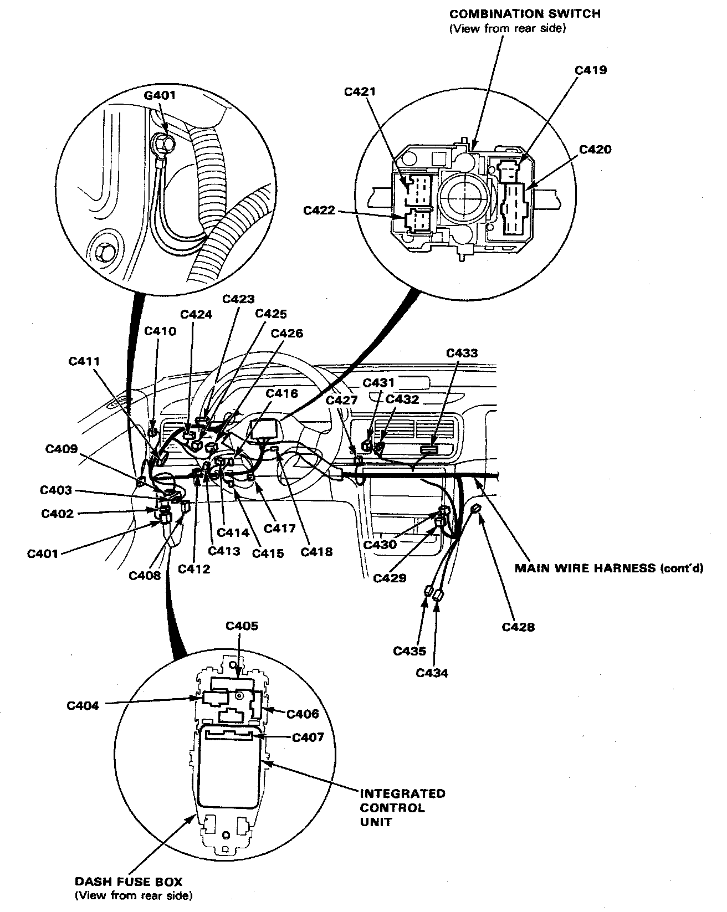
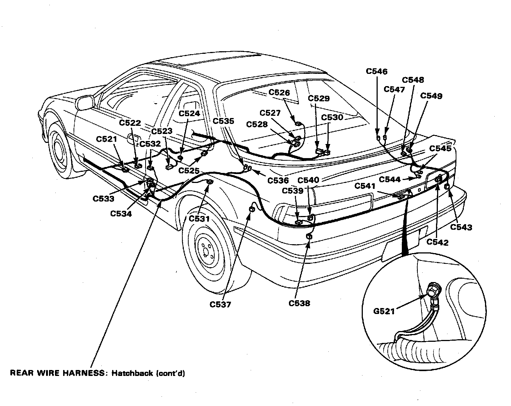
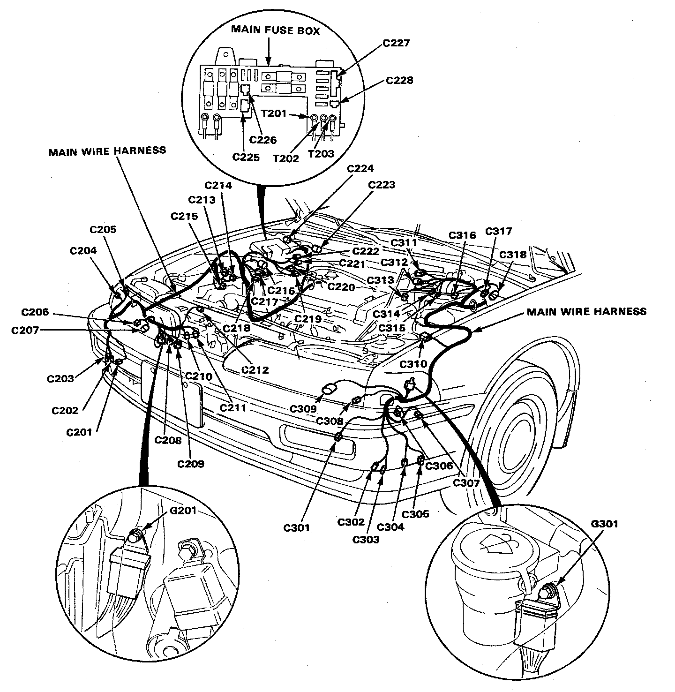

Operation CHARM
: Car repair manuals for everyone.
Home
>>
Acura
>>
1990
>>
Integra L4-1834cc 1.8L DOHC FI
>>
Repair and Diagnosis
>>
Lighting and Horns
>>
Headlamp
>>
Locations
Headlamp: Locations



Lighting system connectors and grounds